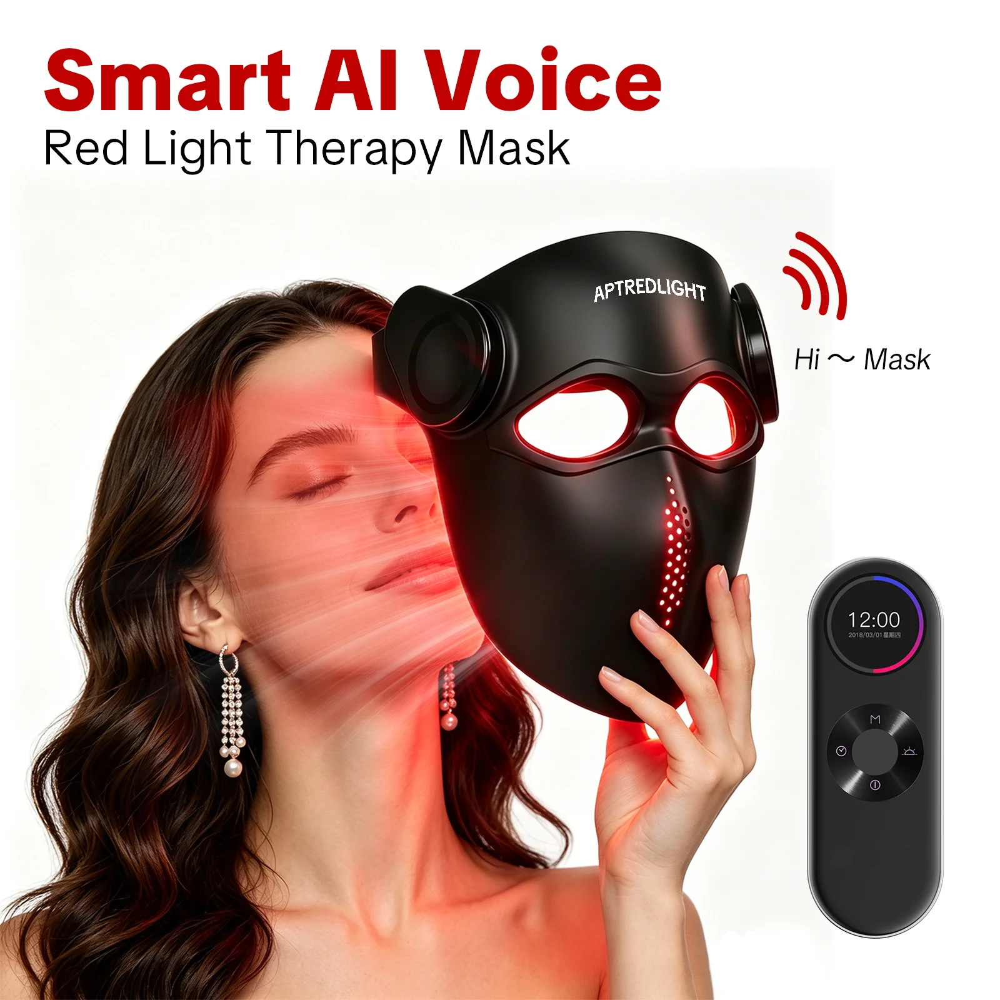
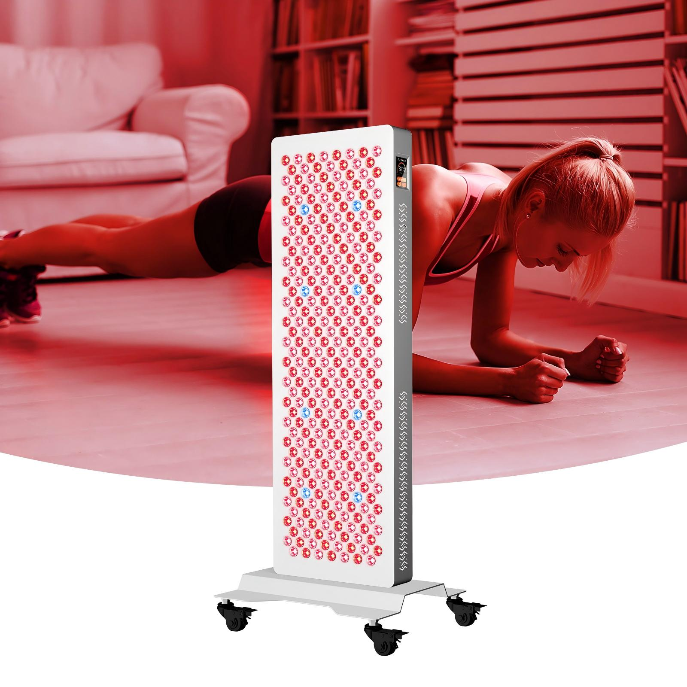

Smart AI Voice Red Light Therapy Mask
A mask platform for your beauty and wellness collection.
Explore the Smart AI Voice Red Light Therapy Mask shown in our product artwork. Discuss voice commands, supported languages, controls, branding and packaging with APTREDLIGHT. Final specifications are confirmed for the selected version.
Get to know your light.
Final specifications and included accessories depend on the selected version. Request the exact specification sheet before purchase.
| Format | Face mask |
|---|---|
| Collection | MASK collection |
| Controls | Voice-control platform; confirm commands and languages |
| Best fit | Beauty and wellness brand projects |
Before you order.
What's included?
Ask our team to confirm the device configuration, controller, power supply, plug, mounting accessories and manual included in your quotation.
Shipping, warranty and returns
We confirm destination-specific shipping, lead time, warranty coverage and return terms in writing before purchase. This preview does not process payments or place orders.
Instructions and product documents
Request the manual and applicable documentation for your exact model. Follow its guidance for positioning, session settings and eye protection.
Verify the configuration. Match the evidence.
Use these questions to define the documents and sample checks for the smart voice LED mask platform. Confirm record availability and scope with the team before using a claim in your own listing.
Which spectrum evidence should a buyer request for this configuration?
Request a measured spectrum, wavelength allocation, instrument details, calibration status, test conditions and date for the quoted mask configuration, controller, operating mode, fit and measurement arrangement. A product-family wavelength label is not a complete spectrum measurement. Confirm which records are available and whether they cover the actual quoted sample.
How should a zero-flicker claim be verified?
A zero-flicker claim requires temporal-light measurements or a waveform for the exact tested configuration. Record the instrument, power supply, operating and dimming modes, test conditions and acceptance criterion. A phone-camera video or a product photograph does not establish zero flicker across every setting. Confirm the evidence for the selected model before making the claim.
Does FDA registration or device listing establish product approval?
FDA establishment registration and device listing do not establish approval, clearance or authorization. Request the applicable status and supporting evidence for the exact model, intended use and destination market. A database entry or a supplier registration statement alone is not evidence that this product has FDA approval.
What does ISO 13485 establish, and which scope should a buyer verify?
ISO 13485 concerns a quality management system within a defined organizational scope. If a certificate is cited, check the legal entity, site, activities, issuer, certificate number and validity. Review the separate records applicable to the quoted model and market; a management-system certificate is not standalone approval of every catalogue product. Confirm matching evidence before using an APTREDLIGHT certification claim.
What evidence is needed for a per-unit calibration or test-record claim?
Confirm whether checks are sample-based, batch-based or performed on every unit. An instrument calibration certificate does not establish that each finished product was calibrated. If unit-level records are requested, agree the product serial number, configuration, method, test date, acceptance criteria and record availability in the project scope and quotation.
Prepare a model-specific evidence request → · Review document scope → · Discuss your sourcing brief →
Reference: FDA registration and listing · ISO 13485 quality management systems
More ways to find your light.

T300 Multi-Wavelength Panel
A versatile panel for your own dedicated light routine.

T1260 Pro Full-Body Panel
Build a full-body light space around your routine.

A13 Portable Panel
A compact light companion for smaller spaces.

Targeted Waist Wrap
A flexible wrap that fits around your everyday.

Red Light Wellness Mat
Make your relaxation space a light-filled space.
Product media & documents
Review the current product record, model confirmation notes, images, videos and available downloads. Product-family media does not replace an exact-model specification.
Open product resources → · Check document scope →